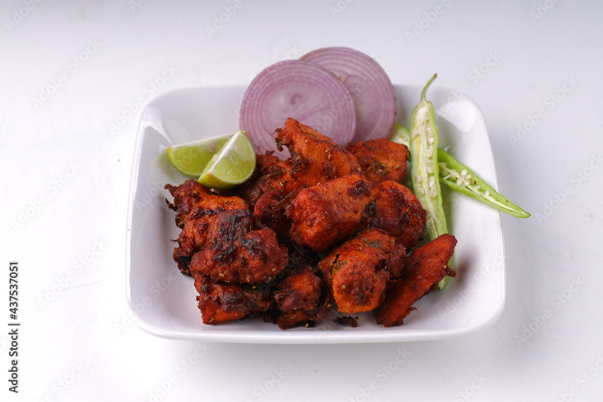

Chicken Fry
Description
Chicken Fry is a popular dish known for its crispy, flavorful exterior and juicy, tender meat inside. This dish involves marinating chicken pieces in a blend of spices and sometimes yogurt, then frying them until they achieve a golden-brown, crispy coating. Chicken fry can vary in flavor profiles depending on regional spices and ingredients, but it always delivers a satisfying crunch and rich taste.
Ingredients
- 500g chicken pieces (preferably drumsticks or thighs)
- 1/2 cup yogurt
- 2 tablespoons ginger-garlic paste
- 1 teaspoon turmeric powder
- 1 teaspoon red chili powder
- 1 teaspoon cumin powder
- 1 teaspoon coriander powder
- 1/2 teaspoon garam masala powder
- Salt to taste
- 2-3 green chilies, slit
- 1 tablespoon lemon juice
- 2 tablespoons rice flour (optional, for extra crispiness)
- 1 cup oil (for deep frying)
- Fresh coriander leaves (for garnish)
- Lemon wedges (for serving)
Steps
- In a large bowl, mix yogurt, ginger-garlic paste, turmeric powder, red chili powder, cumin powder, coriander powder, garam masala powder, salt, and lemon juice.
- Add chicken pieces to the marinade, ensuring they are well coated.
- Cover and refrigerate for at least 1-2 hours, or overnight for best results.
- If using, coat the marinated chicken pieces with rice flour for extra crispiness.
- Heat oil in a deep frying pan or wok over medium heat.
- Once the oil is hot, carefully add the marinated chicken pieces to the pan, a few at a time, without overcrowding.
- Fry until the chicken is golden brown and cooked through, turning occasionally to ensure even cooking. This should take about 10-15 minutes per batch.
- Remove the fried chicken pieces and drain on paper towels to remove excess oil.
- Garnish with fresh coriander leaves.
- Serve hot with lemon wedges and green chilies on the side. Enjoy your Bengali Chicken Fry!